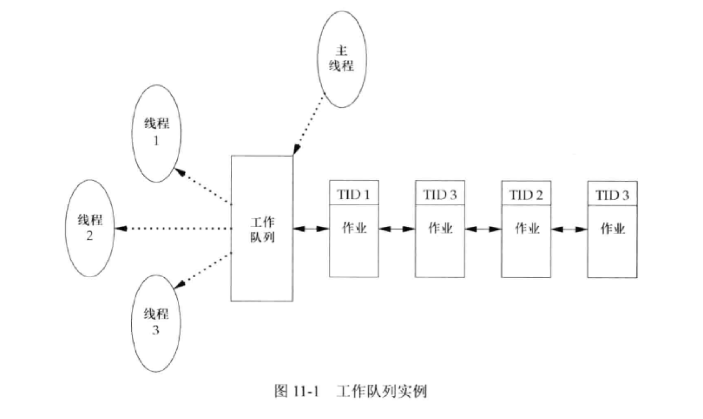
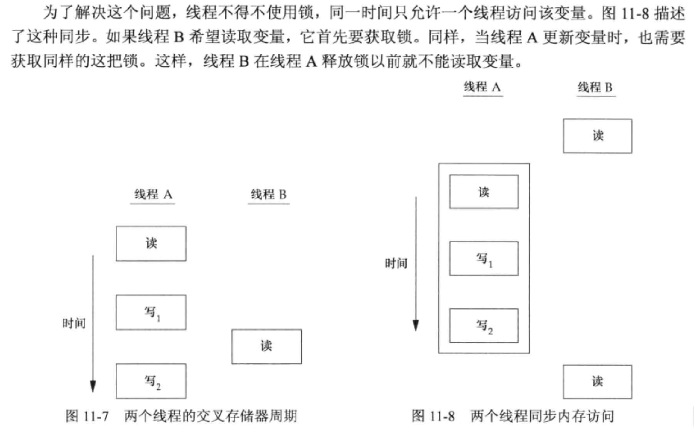

<!DOCTYPE html>
<html lang="en">

<head>
  <meta charset="utf-8" />
   
  <meta name="keywords" content="生活,旅行,思考,代码,博客" />
   
  <meta name="description" content="一座孤岛" />
  
  <meta name="viewport" content="width=device-width, initial-scale=1, maximum-scale=1" />
  <title>
    《APUE》ch11——线程 |  akaQin&#39;s Blog
  </title>
  <meta name="generator" content="hexo-theme-yilia-plus">
  
  <link rel="shortcut icon" href="/favicon.ico" />
  
  
<link rel="stylesheet" href="/css/style.css">

  
<script src="/js/pace.min.js"></script>


  

  

<link rel="alternate" href="/atom.xml" title="akaQin's Blog" type="application/atom+xml">
</head>

</html>

<body>
  <div id="app">
    <main class="content">
      <section class="outer">
  <article id="post-《APUE》ch11——线程" class="article article-type-post" itemscope
  itemprop="blogPost" data-scroll-reveal>

  <div class="article-inner">
    
    <header class="article-header">
       
<h1 class="article-title sea-center" style="border-left:0" itemprop="name">
  《APUE》ch11——线程
</h1>
  

    </header>
    

    
    <div class="article-meta">
      <a href="/2019/12/20/%E3%80%8AAPUE%E3%80%8Bch11%E2%80%94%E2%80%94%E7%BA%BF%E7%A8%8B/" class="article-date">
  <time datetime="2019-12-20T14:19:30.000Z" itemprop="datePublished">2019-12-20</time>
</a>
      
  <div class="article-category">
    <a class="article-category-link" href="/categories/%E3%80%8AAPUE%E3%80%8B%E7%AC%94%E8%AE%B0/">《APUE》笔记</a>
  </div>

      
      
<div class="word_count">
    <span class="post-time">
        <span class="post-meta-item-icon">
            <i class="ri-quill-pen-line"></i>
            <span class="post-meta-item-text"> 字数统计:</span>
            <span class="post-count">3.8k字</span>
        </span>
    </span>

    <span class="post-time">
        &nbsp; | &nbsp;
        <span class="post-meta-item-icon">
            <i class="ri-book-open-line"></i>
            <span class="post-meta-item-text"> 阅读时长≈</span>
            <span class="post-count">16分钟</span>
        </span>
    </span>
</div>

      
    </div>
    

    
    
    <div class="tocbot"></div>


    

    
    <div class="article-entry" itemprop="articleBody">
      


      

      
      <h2 id="线程概念"><a href="#线程概念" class="headerlink" title="线程概念"></a>线程概念</h2><p>线程包含有表示执行环境所必须的信息，包括线程ID、一组寄存器值、栈、调度优先级和策略、信号屏蔽字、errno变量以及线程私有数据。一个进程的所有信息对该进程的所有线程都是共享的，包括可执行程序的代码、程序的全局内存和堆内存、栈以及文件描述符。</p>
<h2 id="线程标识"><a href="#线程标识" class="headerlink" title="线程标识"></a>线程标识</h2><p>每个线程有一个线程ID，进程ID在整个系统中是唯一的，但线程ID不同，线程ID只有它所属的进程上下文中才有意义。</p>
<figure class="highlight c"><table><tr><td class="gutter"><pre><span class="line">1</span><br><span class="line">2</span><br><span class="line">3</span><br><span class="line">4</span><br></pre></td><td class="code"><pre><span class="line"></span><br><span class="line"><span class="function"><span class="keyword">int</span> <span class="title">pthread_equal</span><span class="params">(<span class="keyword">pthread_t</span> tid1, <span class="keyword">pthread_t</span> tid2)</span></span>; <span class="comment">//比较两个线程是否相等</span></span><br><span class="line"></span><br><span class="line"><span class="function"><span class="keyword">pthread_t</span> <span class="title">pthread_self</span><span class="params">(<span class="keyword">void</span>)</span></span>; <span class="comment">//获取调用线程的线程ID</span></span><br></pre></td></tr></table></figure>
<p></p>
<a id="more"></a>

<h2 id="线程创建"><a href="#线程创建" class="headerlink" title="线程创建"></a>线程创建</h2><p>每个进程只有一个控制线程。线程创建时不保证哪个线程会先运行。新创建的线程可以访问进程的地址空间，并继承调用线程的浮点环境和信号屏蔽字，但是该线程的挂起信号集会被清除。</p>
<figure class="highlight c"><table><tr><td class="gutter"><pre><span class="line">1</span><br><span class="line">2</span><br><span class="line">3</span><br><span class="line">4</span><br><span class="line">5</span><br><span class="line">6</span><br></pre></td><td class="code"><pre><span class="line"><span class="function"><span class="keyword">int</span> <span class="title">pthread_create</span><span class="params">(</span></span></span><br><span class="line"><span class="function"><span class="params">  <span class="keyword">pthread_t</span> *<span class="keyword">restrict</span> tidp, <span class="comment">//线程ID</span></span></span></span><br><span class="line"><span class="function"><span class="params">  <span class="keyword">const</span> <span class="keyword">pthread_attr_t</span> *<span class="keyword">restrict</span> attr, <span class="comment">//线程属性</span></span></span></span><br><span class="line"><span class="function"><span class="params">  <span class="keyword">void</span> *(*start_rtn)(<span class="keyword">void</span> *), <span class="comment">//新线程从start_rtn开始执行</span></span></span></span><br><span class="line"><span class="function"><span class="params">  <span class="keyword">void</span> *<span class="keyword">restrict</span> arg <span class="comment">// start_rnt函数的参数</span></span></span></span><br><span class="line"><span class="function"><span class="params">)</span></span>;</span><br></pre></td></tr></table></figure>

<!--more-->

<figure class="highlight c"><table><tr><td class="gutter"><pre><span class="line">1</span><br><span class="line">2</span><br><span class="line">3</span><br><span class="line">4</span><br><span class="line">5</span><br><span class="line">6</span><br><span class="line">7</span><br><span class="line">8</span><br><span class="line">9</span><br><span class="line">10</span><br><span class="line">11</span><br><span class="line">12</span><br><span class="line">13</span><br><span class="line">14</span><br><span class="line">15</span><br><span class="line">16</span><br><span class="line">17</span><br><span class="line">18</span><br><span class="line">19</span><br><span class="line">20</span><br><span class="line">21</span><br><span class="line">22</span><br><span class="line">23</span><br><span class="line">24</span><br><span class="line">25</span><br><span class="line">26</span><br><span class="line">27</span><br><span class="line">28</span><br><span class="line">29</span><br></pre></td><td class="code"><pre><span class="line"><span class="keyword">pthread_t</span> new_tid;</span><br><span class="line"></span><br><span class="line"><span class="function"><span class="keyword">void</span> <span class="title">print_ids</span><span class="params">(<span class="keyword">const</span> <span class="keyword">char</span> *s)</span></span></span><br><span class="line"><span class="function"></span>&#123;</span><br><span class="line">    <span class="keyword">pid_t</span> pid = getppid();</span><br><span class="line">    <span class="keyword">pthread_t</span> tid = pthread_self();</span><br><span class="line"></span><br><span class="line">    <span class="built_in">printf</span>(<span class="string">"%s pid %lu tid %lu (0x%lx)\n"</span>, s, (<span class="keyword">unsigned</span> <span class="keyword">long</span>) pid, (<span class="keyword">unsigned</span> <span class="keyword">long</span>) tid, (<span class="keyword">unsigned</span> <span class="keyword">long</span>) tid);</span><br><span class="line">&#125;</span><br><span class="line"></span><br><span class="line"><span class="function"><span class="keyword">void</span> *<span class="title">thread_function</span><span class="params">(<span class="keyword">void</span> *arg)</span></span></span><br><span class="line"><span class="function"></span>&#123;</span><br><span class="line">    print_ids(<span class="string">"new thread : "</span>);</span><br><span class="line">    <span class="keyword">return</span> (<span class="keyword">void</span> *) <span class="number">0</span>;</span><br><span class="line">&#125;</span><br><span class="line"></span><br><span class="line"><span class="function"><span class="keyword">int</span> <span class="title">main</span><span class="params">(<span class="keyword">void</span>)</span></span></span><br><span class="line"><span class="function"></span>&#123;</span><br><span class="line">    <span class="keyword">int</span> err;</span><br><span class="line">    err = pthread_create(&amp;new_tid, <span class="literal">NULL</span>, thread_function, <span class="literal">NULL</span>);</span><br><span class="line"></span><br><span class="line">    <span class="keyword">if</span> (err != <span class="number">0</span>) &#123;</span><br><span class="line">        err_exit(err, <span class="string">"can't create thread"</span>);</span><br><span class="line">    &#125;</span><br><span class="line"></span><br><span class="line">    print_ids(<span class="string">"main thread: "</span>);</span><br><span class="line">    sleep(<span class="number">1</span>);</span><br><span class="line">    <span class="built_in">exit</span>(<span class="number">0</span>);</span><br><span class="line">&#125;</span><br></pre></td></tr></table></figure>

<p>这个实例有两个特别之处，主线程与新线程之间存在竞争：</p>
<ol>
<li>主线程如果不休眠，可能新线程还没有机会执行，整个进程就终止了</li>
<li>新线程通过调用pthread_self获取自身的线程ID，而不是从共享内存读出或从线程的启动例程中以参数形式接收，因为那样并不安全。</li>
</ol>
<h2 id="线程终止"><a href="#线程终止" class="headerlink" title="线程终止"></a>线程终止</h2><p>如果进程中的任意线程调用了exit、_Exit、或者_exit，那么整个进程就会终止。<br>单个线程可以在不终止整个进程的情况下，以以下三种方式停止它的控制流：</p>
<ol>
<li>线程可以简单地从启动例程中返回，返回值是线程的退出码。</li>
<li>线程可以被同一进程中的其他线程取消。</li>
<li>线程调用pthread_exit。</li>
</ol>
<h3 id="使用pthread-exit退出"><a href="#使用pthread-exit退出" class="headerlink" title="使用pthread_exit退出"></a>使用<code>pthread_exit</code>退出</h3><figure class="highlight c"><table><tr><td class="gutter"><pre><span class="line">1</span><br><span class="line">2</span><br><span class="line">3</span><br><span class="line">4</span><br></pre></td><td class="code"><pre><span class="line"></span><br><span class="line"><span class="function"><span class="keyword">void</span> <span class="title">pthread_exit</span><span class="params">(<span class="keyword">void</span> *rval_ptr)</span></span>; <span class="comment">//单个线程退出</span></span><br><span class="line"></span><br><span class="line"><span class="function"><span class="keyword">int</span> <span class="title">pthread_join</span><span class="params">(<span class="keyword">pthread_t</span> thread, <span class="keyword">void</span> **rval_ptr)</span></span>;</span><br></pre></td></tr></table></figure>
<p><code>pthread_join</code>相当于进程里的<code>waitpid</code>,调用线程将一直阻塞，直到指定线程调用<code>pthread_exit</code>退出、从启动例程中返回或者取消。reval_ptr是无类型指针，包含返回状态，如果不感兴趣的话可以设为NULL。</p>
<p>下面展示用自动变量（分配在栈上）作为pthread_exit的参数时出现的问题：</p>
<figure class="highlight c"><table><tr><td class="gutter"><pre><span class="line">1</span><br><span class="line">2</span><br><span class="line">3</span><br><span class="line">4</span><br><span class="line">5</span><br><span class="line">6</span><br><span class="line">7</span><br><span class="line">8</span><br><span class="line">9</span><br><span class="line">10</span><br><span class="line">11</span><br><span class="line">12</span><br><span class="line">13</span><br><span class="line">14</span><br><span class="line">15</span><br><span class="line">16</span><br><span class="line">17</span><br><span class="line">18</span><br><span class="line">19</span><br><span class="line">20</span><br><span class="line">21</span><br><span class="line">22</span><br><span class="line">23</span><br><span class="line">24</span><br><span class="line">25</span><br><span class="line">26</span><br><span class="line">27</span><br><span class="line">28</span><br><span class="line">29</span><br><span class="line">30</span><br><span class="line">31</span><br><span class="line">32</span><br><span class="line">33</span><br><span class="line">34</span><br><span class="line">35</span><br><span class="line">36</span><br></pre></td><td class="code"><pre><span class="line"><span class="class"><span class="keyword">struct</span> <span class="title">foo</span> &#123;</span></span><br><span class="line">    <span class="keyword">int</span> a, b, c, d;</span><br><span class="line">&#125;;</span><br><span class="line"></span><br><span class="line"><span class="function"><span class="keyword">void</span> <span class="title">print_foo</span><span class="params">(<span class="keyword">const</span> <span class="keyword">char</span> *s, <span class="keyword">const</span> struct foo *fp)</span> </span>&#123;</span><br><span class="line">    <span class="built_in">printf</span>(<span class="string">"%s"</span>, s);</span><br><span class="line">    <span class="built_in">printf</span>(<span class="string">"  structure at 0x%lx\n"</span>, (<span class="keyword">unsigned</span> <span class="keyword">long</span>) fp);</span><br><span class="line">    <span class="built_in">printf</span>(<span class="string">"  foo.a = %d\n"</span>, fp-&gt;a);</span><br><span class="line">    <span class="built_in">printf</span>(<span class="string">"  foo.b = %d\n"</span>, fp-&gt;b);</span><br><span class="line">    <span class="built_in">printf</span>(<span class="string">"  foo.c = %d\n"</span>, fp-&gt;c);</span><br><span class="line">    <span class="built_in">printf</span>(<span class="string">"  foo.d = %d\n"</span>, fp-&gt;d);</span><br><span class="line">&#125;</span><br><span class="line"></span><br><span class="line"><span class="function"><span class="keyword">void</span> *<span class="title">thread_func1</span><span class="params">(<span class="keyword">void</span> *arg)</span> </span>&#123;</span><br><span class="line">    <span class="class"><span class="keyword">struct</span> <span class="title">foo</span> <span class="title">foo</span> = &#123;</span><span class="number">1</span>, <span class="number">2</span>, <span class="number">3</span>, <span class="number">4</span>&#125;;</span><br><span class="line">    print_foo(<span class="string">"thread 1: "</span>, &amp;foo);</span><br><span class="line">    pthread_exit((<span class="keyword">void</span> *) &amp;foo);</span><br><span class="line">&#125;</span><br><span class="line"></span><br><span class="line"></span><br><span class="line"><span class="function"><span class="keyword">int</span> <span class="title">main</span><span class="params">(<span class="keyword">void</span>)</span> </span>&#123;</span><br><span class="line">    <span class="keyword">pthread_t</span> tid1;</span><br><span class="line">    <span class="class"><span class="keyword">struct</span> <span class="title">foo</span> * <span class="title">foo_ptr</span>;</span></span><br><span class="line"></span><br><span class="line">    <span class="keyword">if</span> (pthread_create(&amp;tid1, <span class="literal">NULL</span>, thread_func1, <span class="literal">NULL</span>) != <span class="number">0</span>) &#123;</span><br><span class="line">        err_sys(<span class="string">"error"</span>);</span><br><span class="line">    &#125;</span><br><span class="line"></span><br><span class="line">    <span class="keyword">if</span> (pthread_join(tid1, (<span class="keyword">void</span>*)&amp;foo_ptr) != <span class="number">0</span>) &#123;</span><br><span class="line">        err_sys(<span class="string">"error"</span>);</span><br><span class="line">    &#125;</span><br><span class="line"></span><br><span class="line">    print_foo(<span class="string">"main: "</span>, foo_ptr);</span><br><span class="line"></span><br><span class="line">    <span class="built_in">exit</span>(<span class="number">0</span>);</span><br><span class="line">&#125;</span><br></pre></td></tr></table></figure>

<figure class="highlight bash"><table><tr><td class="gutter"><pre><span class="line">1</span><br><span class="line">2</span><br><span class="line">3</span><br><span class="line">4</span><br><span class="line">5</span><br><span class="line">6</span><br><span class="line">7</span><br><span class="line">8</span><br><span class="line">9</span><br></pre></td><td class="code"><pre><span class="line">//在macOS X上运行：</span><br><span class="line">$ ./a.out  </span><br><span class="line">thread 1:   structure at 0x70000f3e9f90</span><br><span class="line">  foo.a = 1</span><br><span class="line">  foo.b = 2</span><br><span class="line">  foo.c = 3</span><br><span class="line">  foo.d = 4</span><br><span class="line">main:   structure at 0x70000f3e9f90</span><br><span class="line">[1]    27204 segmentation fault  ./a.out</span><br></pre></td></tr></table></figure>
<p>可以看到，当主线程访问这个结构时,结构的内容（在线程tid1的栈上分配的）已经改变了。父进程试图访问已退出的第一个线程传给它的结构时，内存不再有效，这时得到的是SIGSEGV信号。为了解决这个问题，可以使用全局结构，或者用malloc函数分配结构。</p>
<h3 id="使用pthread-cancel取消线程"><a href="#使用pthread-cancel取消线程" class="headerlink" title="使用pthread_cancel取消线程"></a>使用<code>pthread_cancel</code>取消线程</h3><p>线程可以通过<code>pthread_cancel</code>函数来请求取消同一进程中的其他线程。<br>线程可以注册退出时调用的 <em>线程清理程序（thread cleanup handler）</em> ，这与进程的<code>atexit</code>函数类似。</p>
<figure class="highlight c"><table><tr><td class="gutter"><pre><span class="line">1</span><br><span class="line">2</span><br><span class="line">3</span><br><span class="line">4</span><br><span class="line">5</span><br><span class="line">6</span><br></pre></td><td class="code"><pre><span class="line"></span><br><span class="line"><span class="function"><span class="keyword">int</span> <span class="title">pthread_cancel</span><span class="params">(<span class="keyword">pthread_t</span> tid)</span></span>;</span><br><span class="line"></span><br><span class="line"><span class="function"><span class="keyword">void</span> <span class="title">pthread_cleanup_push</span><span class="params">(<span class="keyword">void</span> (*rnt)(<span class="keyword">void</span> *), <span class="keyword">void</span> *arg)</span></span>;</span><br><span class="line"></span><br><span class="line"><span class="function"><span class="keyword">void</span> <span class="title">pthread_cleanup_pop</span><span class="params">(<span class="keyword">int</span> execute)</span></span>;</span><br></pre></td></tr></table></figure>

<h2 id="线程与进程的原语比较"><a href="#线程与进程的原语比较" class="headerlink" title="线程与进程的原语比较"></a>线程与进程的原语比较</h2><p></p>
<h2 id="线程分离"><a href="#线程分离" class="headerlink" title="线程分离"></a>线程分离</h2><p>默认情况下，线程的终止状态会保存直到对该线程调用<code>pthread_join</code>。如果线程已经被<code>分离</code>,线程的底层存储资源可以在线程终止时立即被回收。在线程被分离后，我们不能用<code>pthread_join</code>函数等待它的终止状态，这会产生未定义的行为。可以调用<code>pthread_detach</code>分离线程。</p>
<figure class="highlight c"><table><tr><td class="gutter"><pre><span class="line">1</span><br><span class="line">2</span><br></pre></td><td class="code"><pre><span class="line"></span><br><span class="line"><span class="function"><span class="keyword">int</span> <span class="title">pthread_detach</span><span class="params">(<span class="keyword">pthread_t</span> tid)</span></span>;</span><br></pre></td></tr></table></figure>

<h2 id="线程同步"><a href="#线程同步" class="headerlink" title="线程同步"></a>线程同步</h2><p>当进程中存在多个线程时，每个线程使用的变量可能会被其他线程读取或修改，为解决这个问题，就必须使用锁。<br></p>
<h3 id="互斥量"><a href="#互斥量" class="headerlink" title="互斥量"></a>互斥量</h3><p>互斥量本质是一把锁，在访问共享资源前加锁（对互斥量进行设置），完成后解锁（释放互斥量）。涉及以下函数</p>
<figure class="highlight c"><table><tr><td class="gutter"><pre><span class="line">1</span><br><span class="line">2</span><br><span class="line">3</span><br><span class="line">4</span><br><span class="line">5</span><br><span class="line">6</span><br><span class="line">7</span><br><span class="line">8</span><br><span class="line">9</span><br><span class="line">10</span><br><span class="line">11</span><br><span class="line">12</span><br><span class="line">13</span><br><span class="line">14</span><br></pre></td><td class="code"><pre><span class="line"><span class="comment">//互斥量初始化，也可以直接用 PTHREAD_MUTEX_INITIALIZER 常量静态初始化</span></span><br><span class="line"><span class="function"><span class="keyword">int</span> <span class="title">pthread_mutex_init</span><span class="params">(<span class="keyword">pthread_mutex_t</span> *<span class="keyword">restrict</span> mutex, <span class="keyword">const</span> <span class="keyword">pthread_mutexattr_t</span> *<span class="keyword">restrict</span> attr)</span></span>;</span><br><span class="line"></span><br><span class="line"><span class="comment">//反初始化，释放互斥量</span></span><br><span class="line"><span class="function"><span class="keyword">int</span> <span class="title">pthread_mutex_destory</span><span class="params">(<span class="keyword">pthread_mutex_t</span> *mutex)</span></span>;</span><br><span class="line"></span><br><span class="line"><span class="comment">//对互斥量加锁，如果已经上锁，则调用线程将阻塞直至互斥量被解锁</span></span><br><span class="line"><span class="function"><span class="keyword">int</span> <span class="title">pthread_mutex_lock</span><span class="params">(<span class="keyword">pthread_mutex_t</span> *mutex)</span></span>;</span><br><span class="line"></span><br><span class="line"><span class="comment">//对互斥量尝试加锁，成功返回0，失败不阻塞，直接返回EBUSY</span></span><br><span class="line"><span class="function"><span class="keyword">int</span> <span class="title">pthread_mutex_trylock</span><span class="params">(<span class="keyword">pthread_mutex_t</span> *mutex)</span></span>;</span><br><span class="line"></span><br><span class="line"><span class="comment">//对互斥量解锁</span></span><br><span class="line"><span class="function"><span class="keyword">int</span> <span class="title">pthread_mutex_unlock</span><span class="params">(<span class="keyword">pthread_mutex_t</span> *mutex)</span></span>;</span><br></pre></td></tr></table></figure>


<h3 id="避免死锁"><a href="#避免死锁" class="headerlink" title="避免死锁"></a>避免死锁</h3><h4 id="造成死锁的原因"><a href="#造成死锁的原因" class="headerlink" title="造成死锁的原因"></a>造成死锁的原因</h4><p>如果线程对同一个互斥量加锁两次，会造成死锁；两个线程各自锁住一个互斥量，并等待对方解锁它持有的互斥量，也会造成死锁。</p>
<h4 id="避免死锁的方法："><a href="#避免死锁的方法：" class="headerlink" title="避免死锁的方法："></a>避免死锁的方法：</h4><ul>
<li>可以通过仔细控制互斥量加锁的顺序来避免死锁发生（按相同的顺序加锁）</li>
<li>使用<code>pthread_mutex_trylock</code>尝试加锁，如果失败则先释放已有的锁，做好清理工作，过段时间再试</li>
</ul>
<p>下面的例子说明了使用两把锁时如何进行简化设计，避免死锁：</p>
<figure class="highlight c"><table><tr><td class="gutter"><pre><span class="line">1</span><br><span class="line">2</span><br><span class="line">3</span><br><span class="line">4</span><br><span class="line">5</span><br><span class="line">6</span><br><span class="line">7</span><br><span class="line">8</span><br><span class="line">9</span><br><span class="line">10</span><br><span class="line">11</span><br><span class="line">12</span><br><span class="line">13</span><br><span class="line">14</span><br><span class="line">15</span><br><span class="line">16</span><br><span class="line">17</span><br><span class="line">18</span><br><span class="line">19</span><br><span class="line">20</span><br><span class="line">21</span><br><span class="line">22</span><br><span class="line">23</span><br><span class="line">24</span><br><span class="line">25</span><br><span class="line">26</span><br><span class="line">27</span><br><span class="line">28</span><br><span class="line">29</span><br><span class="line">30</span><br><span class="line">31</span><br><span class="line">32</span><br><span class="line">33</span><br><span class="line">34</span><br><span class="line">35</span><br><span class="line">36</span><br><span class="line">37</span><br><span class="line">38</span><br><span class="line">39</span><br><span class="line">40</span><br><span class="line">41</span><br><span class="line">42</span><br><span class="line">43</span><br><span class="line">44</span><br><span class="line">45</span><br><span class="line">46</span><br><span class="line">47</span><br><span class="line">48</span><br><span class="line">49</span><br><span class="line">50</span><br><span class="line">51</span><br><span class="line">52</span><br><span class="line">53</span><br><span class="line">54</span><br><span class="line">55</span><br><span class="line">56</span><br><span class="line">57</span><br><span class="line">58</span><br><span class="line">59</span><br><span class="line">60</span><br><span class="line">61</span><br><span class="line">62</span><br><span class="line">63</span><br><span class="line">64</span><br><span class="line">65</span><br><span class="line">66</span><br><span class="line">67</span><br><span class="line">68</span><br><span class="line">69</span><br><span class="line">70</span><br><span class="line">71</span><br><span class="line">72</span><br><span class="line">73</span><br><span class="line">74</span><br><span class="line">75</span><br><span class="line">76</span><br><span class="line">77</span><br><span class="line">78</span><br><span class="line">79</span><br><span class="line">80</span><br><span class="line">81</span><br></pre></td><td class="code"><pre><span class="line"><span class="meta">#<span class="meta-keyword">define</span> NHASH 29</span></span><br><span class="line"><span class="meta">#<span class="meta-keyword">define</span> HASH(id) (((unsigned long) id) % NNHASH)</span></span><br><span class="line"></span><br><span class="line"><span class="class"><span class="keyword">struct</span> <span class="title">foo</span> &#123;</span></span><br><span class="line">    <span class="keyword">int</span> id;</span><br><span class="line">    <span class="keyword">int</span> count;</span><br><span class="line">    <span class="keyword">pthread_mutex_t</span> lock;</span><br><span class="line">    <span class="class"><span class="keyword">struct</span> <span class="title">foo</span> * <span class="title">next</span>;</span></span><br><span class="line">&#125;;</span><br><span class="line"></span><br><span class="line"><span class="class"><span class="keyword">struct</span> <span class="title">foo</span> *<span class="title">foo_buffer</span>[<span class="title">NHASH</span>];</span></span><br><span class="line"></span><br><span class="line"><span class="keyword">pthread_mutex_t</span> hash_lock = PTHREAD_MUTEX_INITIALIZER;</span><br><span class="line"></span><br><span class="line"><span class="function">struct foo *<span class="title">foo_alloc</span><span class="params">(<span class="keyword">int</span> id)</span> </span>&#123;</span><br><span class="line">    <span class="keyword">int</span> hash_id = HASH(id);</span><br><span class="line"></span><br><span class="line">    <span class="class"><span class="keyword">struct</span> <span class="title">foo</span> * <span class="title">foo_ptr</span> = <span class="title">malloc</span>(<span class="title">sizeof</span>(<span class="title">struct</span> <span class="title">foo</span>));</span></span><br><span class="line">    <span class="keyword">if</span> (foo_ptr == <span class="literal">NULL</span>) &#123;</span><br><span class="line">        <span class="keyword">return</span> <span class="literal">NULL</span>;</span><br><span class="line">    &#125;</span><br><span class="line"></span><br><span class="line">    foo_ptr-&gt;id = id;</span><br><span class="line">    foo_ptr-&gt;count = <span class="number">0</span>;</span><br><span class="line">    pthread_mutex_init(&amp;foo_ptr-&gt;lock);</span><br><span class="line"></span><br><span class="line">    pthread_mutex_lock(&amp;ash_lock);</span><br><span class="line">    foo_ptr-&gt;next = foo_buffer[hash_id];</span><br><span class="line">    foo_buffer[hash_id] = foo_ptr;</span><br><span class="line">    pthread_mutex_unlock(&amp;hash_lock);</span><br><span class="line"></span><br><span class="line">    <span class="keyword">return</span> foo_ptr;</span><br><span class="line">&#125;</span><br><span class="line"></span><br><span class="line"><span class="function"><span class="keyword">void</span> <span class="title">foo_hold</span><span class="params">(struct foo *foo_ptr)</span></span></span><br><span class="line"><span class="function"></span>&#123;</span><br><span class="line">    pthread_mutex_lock(&amp;foo_ptr-&gt;lock);</span><br><span class="line">    foo_ptr-&gt;count++;</span><br><span class="line">    pthread_mutex_unlock(&amp;foo_ptr-&gt;lock);</span><br><span class="line">&#125;</span><br><span class="line"></span><br><span class="line"><span class="function">struct foo *<span class="title">foo_find</span><span class="params">(<span class="keyword">int</span> id)</span></span></span><br><span class="line"><span class="function"></span>&#123;</span><br><span class="line">    <span class="class"><span class="keyword">struct</span> <span class="title">foo</span> * <span class="title">foo_ptr</span>;</span></span><br><span class="line">    <span class="keyword">int</span> hash_id = HASH(id);</span><br><span class="line">    pthread_mutex_lock(&amp;hash_lock);</span><br><span class="line">    <span class="keyword">for</span> (foo_ptr = foo_buffer[hash_id]; foo_ptr != <span class="literal">NULL</span>; foo_ptr = foo_ptr-&gt;next) &#123;</span><br><span class="line">        <span class="keyword">if</span> (foo_ptr-&gt;id == id) &#123;</span><br><span class="line">            foo_hold(foo_ptr);</span><br><span class="line">            <span class="keyword">break</span>;</span><br><span class="line">        &#125;</span><br><span class="line">    &#125;</span><br><span class="line">    pthread_mutex_unlock(&amp;hash_lock);</span><br><span class="line"></span><br><span class="line">    <span class="keyword">return</span> foo_ptr;</span><br><span class="line">&#125;</span><br><span class="line"></span><br><span class="line"><span class="function"><span class="keyword">void</span> <span class="title">foo_release</span><span class="params">(struct foo *foo_ptr)</span></span></span><br><span class="line"><span class="function"></span>&#123;</span><br><span class="line">    pthread_mutex_lock(&amp;hash_lock);</span><br><span class="line"></span><br><span class="line">    <span class="keyword">if</span> (--foo_ptr-&gt;count == <span class="number">0</span>) &#123;</span><br><span class="line">        <span class="keyword">int</span> hash_id = HASH(foo_ptr-&gt;id);</span><br><span class="line">        <span class="class"><span class="keyword">struct</span> <span class="title">foo</span> * <span class="title">foo_temp</span> = <span class="title">foo_buffer</span>[<span class="title">hash_id</span>];</span></span><br><span class="line">        <span class="keyword">if</span> (foo_temp == foo_ptr) &#123;</span><br><span class="line">            foo_buffer[hash_id] = foo_ptr-&gt;next;</span><br><span class="line">        &#125; <span class="keyword">else</span> &#123;</span><br><span class="line">            <span class="keyword">while</span> (foo_temp-&gt;next != <span class="literal">NULL</span>) &#123;</span><br><span class="line">                <span class="keyword">if</span> (foo_temp-&gt;next == foo_ptr) &#123;</span><br><span class="line">                    foo_temp-&gt;next = foo_ptr-&gt;next;</span><br><span class="line">                    <span class="keyword">break</span>;</span><br><span class="line">                &#125;</span><br><span class="line">            &#125;</span><br><span class="line">        &#125;</span><br><span class="line">        pthread_mutex_unlock(&amp;hash_lock);</span><br><span class="line">        pthread_mutex_destroy(&amp;foo_ptr-&gt;lock);</span><br><span class="line">        <span class="built_in">free</span>(foo_ptr);</span><br><span class="line">    &#125; <span class="keyword">else</span> &#123;</span><br><span class="line">        pthread_mutex_unlock(&amp;hash_lock);</span><br><span class="line">    &#125;</span><br><span class="line">&#125;</span><br></pre></td></tr></table></figure>

<p><strong>多线程的软件设计要注意锁的粒度：如果锁的粒度太粗，就会出现多线程阻塞等待相同的锁，这可能并不能改善并发性；如果锁的粒度太细，那么过多的锁开销会使系统性能受影响，而且代码变得复杂。作为一个程序员，需要在满足锁需求的情况下，在代码复杂性和性能之间找到正确的平衡。</strong></p>
<h4 id="带有超时的互斥量"><a href="#带有超时的互斥量" class="headerlink" title="带有超时的互斥量"></a>带有超时的互斥量</h4><p>函数 pthread_mutex_timedlock，加锁时设置一个愿意等待的绝对时间，超时后放弃加锁，返回错误码ETIMEDOUT。</p>
<h3 id="读写锁"><a href="#读写锁" class="headerlink" title="读写锁"></a>读写锁</h3><p>读写锁与互斥量类似，但允许更高的并行性。非常适合于对数据结构读的次数远大于写的情况。</p>
<figure class="highlight c"><table><tr><td class="gutter"><pre><span class="line">1</span><br><span class="line">2</span><br><span class="line">3</span><br><span class="line">4</span><br><span class="line">5</span><br><span class="line">6</span><br><span class="line">7</span><br><span class="line">8</span><br><span class="line">9</span><br><span class="line">10</span><br><span class="line">11</span><br><span class="line">12</span><br><span class="line">13</span><br><span class="line">14</span><br></pre></td><td class="code"><pre><span class="line"><span class="comment">//锁初始化</span></span><br><span class="line"><span class="function"><span class="keyword">int</span> <span class="title">pthread_rwlock_init</span><span class="params">(<span class="keyword">pthread_rwlock_t</span> *<span class="keyword">restrict</span> rwlock, <span class="keyword">const</span> <span class="keyword">pthread_rwlockattr_t</span> * <span class="keyword">restrict</span> attr)</span></span>;</span><br><span class="line"><span class="comment">//销毁</span></span><br><span class="line"><span class="function"><span class="keyword">int</span> <span class="title">pthread_rwlock_destory</span><span class="params">(<span class="keyword">pthread_rwlock_t</span> *rwlock)</span></span>;</span><br><span class="line"><span class="comment">//加读锁</span></span><br><span class="line"><span class="function"><span class="keyword">int</span> <span class="title">pthread_rwlock_rdlock</span><span class="params">(<span class="keyword">pthread_rwlock_t</span> *rwlock)</span></span>;</span><br><span class="line"><span class="comment">//加写锁</span></span><br><span class="line"><span class="function"><span class="keyword">int</span> <span class="title">pthread_rwlock_wrlock</span><span class="params">(<span class="keyword">pthread_rwlock_t</span> *rwlock)</span></span>;</span><br><span class="line"><span class="comment">//尝试加读锁</span></span><br><span class="line"><span class="function"><span class="keyword">int</span> <span class="title">pthread_rwlock_tryrdlock</span><span class="params">(<span class="keyword">pthread_rwlock_t</span> *rwlock)</span></span>;</span><br><span class="line"><span class="comment">//尝试加写锁</span></span><br><span class="line"><span class="function"><span class="keyword">int</span> <span class="title">pthread_rwlock_trywrlock</span><span class="params">(<span class="keyword">pthread_rwlock_t</span> *rwlock)</span></span>;</span><br><span class="line"><span class="comment">//解锁</span></span><br><span class="line"><span class="function"><span class="keyword">int</span> <span class="title">pthread_rwlock_unlock</span><span class="params">(<span class="keyword">pthread_rwlock_t</span> *rwlock)</span></span>;</span><br></pre></td></tr></table></figure>

<p>下面的例子通过读写锁实现了一个多线程的作业请求队列</p>
<figure class="highlight c"><table><tr><td class="gutter"><pre><span class="line">1</span><br><span class="line">2</span><br><span class="line">3</span><br><span class="line">4</span><br><span class="line">5</span><br><span class="line">6</span><br><span class="line">7</span><br><span class="line">8</span><br><span class="line">9</span><br><span class="line">10</span><br><span class="line">11</span><br><span class="line">12</span><br><span class="line">13</span><br><span class="line">14</span><br><span class="line">15</span><br><span class="line">16</span><br><span class="line">17</span><br><span class="line">18</span><br><span class="line">19</span><br><span class="line">20</span><br><span class="line">21</span><br><span class="line">22</span><br><span class="line">23</span><br><span class="line">24</span><br><span class="line">25</span><br><span class="line">26</span><br><span class="line">27</span><br><span class="line">28</span><br><span class="line">29</span><br><span class="line">30</span><br><span class="line">31</span><br><span class="line">32</span><br><span class="line">33</span><br><span class="line">34</span><br><span class="line">35</span><br><span class="line">36</span><br><span class="line">37</span><br><span class="line">38</span><br><span class="line">39</span><br><span class="line">40</span><br><span class="line">41</span><br><span class="line">42</span><br><span class="line">43</span><br><span class="line">44</span><br><span class="line">45</span><br><span class="line">46</span><br><span class="line">47</span><br><span class="line">48</span><br><span class="line">49</span><br><span class="line">50</span><br><span class="line">51</span><br><span class="line">52</span><br><span class="line">53</span><br><span class="line">54</span><br><span class="line">55</span><br><span class="line">56</span><br><span class="line">57</span><br><span class="line">58</span><br><span class="line">59</span><br><span class="line">60</span><br><span class="line">61</span><br><span class="line">62</span><br><span class="line">63</span><br><span class="line">64</span><br><span class="line">65</span><br><span class="line">66</span><br><span class="line">67</span><br><span class="line">68</span><br><span class="line">69</span><br><span class="line">70</span><br><span class="line">71</span><br><span class="line">72</span><br><span class="line">73</span><br><span class="line">74</span><br><span class="line">75</span><br><span class="line">76</span><br><span class="line">77</span><br><span class="line">78</span><br><span class="line">79</span><br><span class="line">80</span><br><span class="line">81</span><br></pre></td><td class="code"><pre><span class="line"><span class="class"><span class="keyword">struct</span> <span class="title">job</span> &#123;</span></span><br><span class="line">    <span class="keyword">pthread_t</span> id;</span><br><span class="line">    <span class="class"><span class="keyword">struct</span> <span class="title">job</span> * <span class="title">prevent</span>;</span></span><br><span class="line">    <span class="class"><span class="keyword">struct</span> <span class="title">job</span> * <span class="title">next</span>;</span></span><br><span class="line">&#125;;</span><br><span class="line"></span><br><span class="line"><span class="class"><span class="keyword">struct</span> <span class="title">queue</span> &#123;</span></span><br><span class="line">    <span class="class"><span class="keyword">struct</span> <span class="title">job</span> * <span class="title">head</span>;</span></span><br><span class="line">    <span class="class"><span class="keyword">struct</span> <span class="title">job</span> * <span class="title">tail</span>;</span></span><br><span class="line">    <span class="keyword">pthread_rwlock_t</span> lock;</span><br><span class="line">&#125;;</span><br><span class="line"></span><br><span class="line"><span class="function"><span class="keyword">int</span> <span class="title">queue_init</span><span class="params">(struct <span class="built_in">queue</span> *queue_ptr)</span> </span>&#123;</span><br><span class="line">    queue_ptr-&gt;head = <span class="literal">NULL</span>;</span><br><span class="line">    queue_ptr-&gt;tail = <span class="literal">NULL</span>;</span><br><span class="line">    <span class="keyword">return</span> pthread_rwlock_init(&amp;queue_ptr-&gt;lock, <span class="literal">NULL</span>);</span><br><span class="line">&#125;</span><br><span class="line"></span><br><span class="line"><span class="function"><span class="keyword">void</span> <span class="title">job_insert</span><span class="params">(struct <span class="built_in">queue</span> *queue_ptr, struct job *job_ptr)</span> </span>&#123;</span><br><span class="line">    pthread_rwlock_wrlock(&amp;queue_ptr-&gt;lock);</span><br><span class="line"></span><br><span class="line">    job_ptr-&gt;next = queue_ptr-&gt;head;</span><br><span class="line">    job_ptr-&gt;prevent = <span class="literal">NULL</span>;</span><br><span class="line">    <span class="keyword">if</span> (queue_ptr-&gt;head == <span class="literal">NULL</span>) &#123;</span><br><span class="line">        queue_ptr-&gt;tail = job_ptr;</span><br><span class="line">    &#125; <span class="keyword">else</span> &#123;</span><br><span class="line">        queue_ptr-&gt;head-&gt;prevent = job_ptr;</span><br><span class="line">    &#125;</span><br><span class="line">    queue_ptr-&gt;head = job_ptr;</span><br><span class="line"></span><br><span class="line">    pthread_rwlock_unlock(&amp;queue_ptr-&gt;lock);</span><br><span class="line">&#125;</span><br><span class="line"></span><br><span class="line"><span class="function"><span class="keyword">void</span> <span class="title">job_append</span><span class="params">(struct <span class="built_in">queue</span> *queue_ptr, struct job * job_ptr)</span> </span>&#123;</span><br><span class="line">    pthread_rwlock_wrlock(&amp;queue_ptr-&gt;lock);</span><br><span class="line"></span><br><span class="line">    job_ptr-&gt;prevent = queue_ptr-&gt;tail;</span><br><span class="line">    job_ptr-&gt;next = <span class="literal">NULL</span>;</span><br><span class="line">    <span class="keyword">if</span> (queue_ptr-&gt;tail == <span class="literal">NULL</span>) &#123;</span><br><span class="line">        queue_ptr-&gt;head = job_ptr;</span><br><span class="line">    &#125; <span class="keyword">else</span> &#123;</span><br><span class="line">        queue_ptr-&gt;tail-&gt;next = job_ptr;</span><br><span class="line">    &#125;</span><br><span class="line">    queue_ptr-&gt;tail = job_ptr;</span><br><span class="line"></span><br><span class="line">    pthread_rwlock_unlock(&amp;queue_ptr-&gt;lock);</span><br><span class="line">&#125;</span><br><span class="line"></span><br><span class="line"><span class="function"><span class="keyword">void</span> <span class="title">job_remove</span><span class="params">(struct <span class="built_in">queue</span> *queue_ptr, struct job *job_ptr)</span> </span>&#123;</span><br><span class="line">    pthread_rwlock_wrlock(&amp;queue_ptr-&gt;lock);</span><br><span class="line"></span><br><span class="line">    <span class="keyword">if</span> (job_ptr == queue_ptr-&gt;head) &#123;</span><br><span class="line">        queue_ptr-&gt;head = job_ptr-&gt;next;</span><br><span class="line">        <span class="keyword">if</span> (queue_ptr-&gt;tail == job_ptr) &#123;</span><br><span class="line">            queue_ptr-&gt;tail = <span class="literal">NULL</span>;</span><br><span class="line">        &#125; <span class="keyword">else</span> &#123;</span><br><span class="line">            queue_ptr-&gt;head-&gt;prevent = job_ptr-&gt;prevent;</span><br><span class="line">        &#125;</span><br><span class="line">    &#125; <span class="keyword">else</span> <span class="keyword">if</span> (job_ptr == queue_ptr-&gt;tail) &#123;</span><br><span class="line">        queue_ptr-&gt;tail = job_ptr-&gt;prevent;</span><br><span class="line">        job_ptr-&gt;prevent-&gt;next = job_ptr-&gt;next;</span><br><span class="line">    &#125; <span class="keyword">else</span> &#123;</span><br><span class="line">        job_ptr-&gt;prevent-&gt;next = job_ptr-&gt;next;</span><br><span class="line">        job_ptr-&gt;next-&gt;prevent = job_ptr-&gt;prevent;</span><br><span class="line">    &#125;</span><br><span class="line"></span><br><span class="line">    pthread_rwlock_unlock(&amp;queue_ptr-&gt;lock);</span><br><span class="line">&#125;</span><br><span class="line"></span><br><span class="line"><span class="function">struct job *<span class="title">job_find</span><span class="params">(struct <span class="built_in">queue</span> *queue_ptr, <span class="keyword">pthread_t</span> tid)</span> </span>&#123;</span><br><span class="line">    pthread_rwlock_rdlock(&amp;queue_ptr-&gt;lock);</span><br><span class="line">    <span class="class"><span class="keyword">struct</span> <span class="title">job</span> * <span class="title">job_ptr</span>;</span></span><br><span class="line">    <span class="keyword">for</span> (job_ptr = queue_ptr-&gt;head; job_ptr != <span class="literal">NULL</span>; job_ptr = job_ptr-&gt;next) &#123;</span><br><span class="line">        <span class="comment">//比较线程ID时使用pthread_equal函数</span></span><br><span class="line">        <span class="keyword">if</span> (pthread_equal(job_ptr-&gt;id, tid)) &#123;</span><br><span class="line">            <span class="keyword">break</span>;</span><br><span class="line">        &#125;</span><br><span class="line">    &#125;</span><br><span class="line">    pthread_rwlock_unlock(&amp;queue_ptr-&gt;lock);</span><br><span class="line">    <span class="keyword">return</span> job_ptr;</span><br><span class="line">&#125;</span><br></pre></td></tr></table></figure>

<h4 id="带有超时的读写锁"><a href="#带有超时的读写锁" class="headerlink" title="带有超时的读写锁"></a>带有超时的读写锁</h4><p>函数<code>pthread_rwlock_timedrdlock</code>和<code>pthread_rwlock_timedwdlock</code>提供带有超时的加锁功能，避免在获取锁时永久阻塞。</p>
<h3 id="条件变量"><a href="#条件变量" class="headerlink" title="条件变量"></a>条件变量</h3><p>条件变量是线程可用的另一种同步机制。条件变量给多个线程提供了一个会合的场所。条件变量与互斥量一起使用时，允许线程以无竞争的方式等待特定的条件发生。</p>
<p>条件变量本身是由互斥量保护的。线程在改变条件状态之前必须先锁住互斥量。其他线程在获得互斥量之前不会察觉到这种改变，因为互斥量必须在锁定以后才能计算条件。</p>
<figure class="highlight c"><table><tr><td class="gutter"><pre><span class="line">1</span><br><span class="line">2</span><br><span class="line">3</span><br><span class="line">4</span><br><span class="line">5</span><br><span class="line">6</span><br><span class="line">7</span><br><span class="line">8</span><br><span class="line">9</span><br><span class="line">10</span><br><span class="line">11</span><br><span class="line">12</span><br><span class="line">13</span><br><span class="line">14</span><br><span class="line">15</span><br><span class="line">16</span><br><span class="line">17</span><br><span class="line">18</span><br><span class="line">19</span><br><span class="line">20</span><br><span class="line">21</span><br><span class="line">22</span><br></pre></td><td class="code"><pre><span class="line"></span><br><span class="line"><span class="comment">//初始化条件变量</span></span><br><span class="line"><span class="function"><span class="keyword">int</span> <span class="title">pthread_cond_init</span><span class="params">(<span class="keyword">pthread_cond_t</span> *<span class="keyword">restrict</span> cond, <span class="keyword">const</span> <span class="keyword">pthread_condattr_t</span> *<span class="keyword">restrict</span> attr)</span></span>;</span><br><span class="line"></span><br><span class="line"><span class="comment">//反初始化</span></span><br><span class="line"><span class="function"><span class="keyword">int</span> <span class="title">pthread_cond_destory</span><span class="params">(<span class="keyword">pthread_cond_t</span> *cond)</span></span>;</span><br><span class="line"></span><br><span class="line"><span class="comment">//等待条件变量变为真</span></span><br><span class="line"><span class="function"><span class="keyword">int</span> <span class="title">pthread_cond_wait</span><span class="params">(<span class="keyword">pthread_cond_t</span> *<span class="keyword">restrict</span> cond, <span class="keyword">pthread_mutex_t</span> *<span class="keyword">restrict</span> mutex)</span></span>;</span><br><span class="line"></span><br><span class="line"><span class="comment">//指定等待时间</span></span><br><span class="line"><span class="function"><span class="keyword">int</span> <span class="title">pthread_cond_timedwait</span><span class="params">(</span></span></span><br><span class="line"><span class="function"><span class="params">  <span class="keyword">pthread_cond_t</span> *<span class="keyword">restrict</span> cond,</span></span></span><br><span class="line"><span class="function"><span class="params">  <span class="keyword">pthread_mutex_t</span> *<span class="keyword">restrict</span> mutex,</span></span></span><br><span class="line"><span class="function"><span class="params">  <span class="keyword">const</span> struct timespec *<span class="keyword">restrict</span> tsptr</span></span></span><br><span class="line"><span class="function"><span class="params">)</span></span>;</span><br><span class="line"></span><br><span class="line"><span class="comment">//通知线程条件已满足。至少能唤醒一个等待该条件的线程</span></span><br><span class="line"><span class="function"><span class="keyword">int</span> <span class="title">pthread_cond_signal</span><span class="params">(<span class="keyword">pthread_cond_t</span> *cond)</span></span>;</span><br><span class="line"></span><br><span class="line"><span class="comment">//唤醒所有</span></span><br><span class="line"><span class="function"><span class="keyword">int</span> <span class="title">pthread_cond_broadcast</span><span class="params">(<span class="keyword">pthread_cond_t</span> *cond)</span></span>;</span><br></pre></td></tr></table></figure>
<p>传递给<code>pthread_cond_wait</code>的互斥量对条件进行保护。调用者把锁住的互斥量传给函数，函数然后自动把调用线程放到等待条件的线程列表上，对互斥量解锁。这就关闭了条件检查和线程进入休眠状态等待条件改变这两个操作之间的时间通道，这样线程就不会错过条件的任何变化。<code>pthread_cond_wait</code>返回时，互斥量再次被锁住。</p>
<h4 id="多线程消息队列"><a href="#多线程消息队列" class="headerlink" title="多线程消息队列"></a>多线程消息队列</h4><p>下面的例子用多线程及条件变量实现了消息队列，展示了如何使用条件变量和互斥量对线程进行同步。</p>
<figure class="highlight c"><table><tr><td class="gutter"><pre><span class="line">1</span><br><span class="line">2</span><br><span class="line">3</span><br><span class="line">4</span><br><span class="line">5</span><br><span class="line">6</span><br><span class="line">7</span><br><span class="line">8</span><br><span class="line">9</span><br><span class="line">10</span><br><span class="line">11</span><br><span class="line">12</span><br><span class="line">13</span><br><span class="line">14</span><br><span class="line">15</span><br><span class="line">16</span><br><span class="line">17</span><br><span class="line">18</span><br><span class="line">19</span><br><span class="line">20</span><br><span class="line">21</span><br><span class="line">22</span><br><span class="line">23</span><br><span class="line">24</span><br><span class="line">25</span><br><span class="line">26</span><br><span class="line">27</span><br><span class="line">28</span><br><span class="line">29</span><br><span class="line">30</span><br><span class="line">31</span><br><span class="line">32</span><br><span class="line">33</span><br><span class="line">34</span><br><span class="line">35</span><br><span class="line">36</span><br><span class="line">37</span><br><span class="line">38</span><br><span class="line">39</span><br><span class="line">40</span><br><span class="line">41</span><br><span class="line">42</span><br><span class="line">43</span><br><span class="line">44</span><br><span class="line">45</span><br><span class="line">46</span><br><span class="line">47</span><br><span class="line">48</span><br><span class="line">49</span><br><span class="line">50</span><br><span class="line">51</span><br><span class="line">52</span><br><span class="line">53</span><br><span class="line">54</span><br><span class="line">55</span><br><span class="line">56</span><br><span class="line">57</span><br><span class="line">58</span><br><span class="line">59</span><br><span class="line">60</span><br><span class="line">61</span><br><span class="line">62</span><br><span class="line">63</span><br><span class="line">64</span><br><span class="line">65</span><br><span class="line">66</span><br><span class="line">67</span><br><span class="line">68</span><br><span class="line">69</span><br><span class="line">70</span><br><span class="line">71</span><br><span class="line">72</span><br><span class="line">73</span><br><span class="line">74</span><br><span class="line">75</span><br><span class="line">76</span><br><span class="line">77</span><br><span class="line">78</span><br><span class="line">79</span><br><span class="line">80</span><br><span class="line">81</span><br><span class="line">82</span><br><span class="line">83</span><br><span class="line">84</span><br><span class="line">85</span><br><span class="line">86</span><br><span class="line">87</span><br><span class="line">88</span><br><span class="line">89</span><br><span class="line">90</span><br><span class="line">91</span><br></pre></td><td class="code"><pre><span class="line"><span class="meta">#<span class="meta-keyword">include</span> <span class="meta-string">&lt;pthread.h&gt;</span></span></span><br><span class="line"><span class="meta">#<span class="meta-keyword">include</span> <span class="meta-string">&lt;unistd.h&gt;</span></span></span><br><span class="line"><span class="meta">#<span class="meta-keyword">include</span> <span class="meta-string">&lt;stdlib.h&gt;</span></span></span><br><span class="line"><span class="meta">#<span class="meta-keyword">include</span> <span class="meta-string">&lt;stdio.h&gt;</span></span></span><br><span class="line"></span><br><span class="line"><span class="class"><span class="keyword">struct</span> <span class="title">msg</span> &#123;</span></span><br><span class="line">    <span class="keyword">int</span> id;</span><br><span class="line">    <span class="class"><span class="keyword">struct</span> <span class="title">msg</span> * <span class="title">next</span>;</span></span><br><span class="line">&#125;;</span><br><span class="line"></span><br><span class="line"><span class="class"><span class="keyword">struct</span> <span class="title">msg</span> *<span class="title">msg_queue</span>;</span></span><br><span class="line"></span><br><span class="line"><span class="keyword">pthread_cond_t</span> queue_ready = PTHREAD_COND_INITIALIZER;</span><br><span class="line"></span><br><span class="line"><span class="keyword">pthread_mutex_t</span> queue_block = PTHREAD_MUTEX_INITIALIZER;</span><br><span class="line"></span><br><span class="line"><span class="function"><span class="keyword">void</span> <span class="title">enqueue_msg</span><span class="params">(struct msg *msg_ptr)</span> </span>&#123;</span><br><span class="line">    <span class="built_in">printf</span>(<span class="string">"message enqueue: %d\n"</span>, msg_ptr-&gt;id);</span><br><span class="line">    pthread_mutex_lock(&amp;queue_block);</span><br><span class="line"></span><br><span class="line">    msg_ptr-&gt;next = msg_queue;</span><br><span class="line">    msg_queue = msg_ptr;</span><br><span class="line"></span><br><span class="line">    pthread_mutex_unlock(&amp;queue_block);</span><br><span class="line"></span><br><span class="line">    pthread_cond_signal(&amp;queue_ready);</span><br><span class="line">&#125;</span><br><span class="line"></span><br><span class="line"><span class="function"><span class="keyword">void</span> <span class="title">process_msg</span><span class="params">(<span class="keyword">char</span> *name)</span></span></span><br><span class="line"><span class="function"></span>&#123;</span><br><span class="line">    <span class="class"><span class="keyword">struct</span> <span class="title">msg</span> * <span class="title">msg_ptr</span>;</span></span><br><span class="line"></span><br><span class="line">    <span class="keyword">while</span> (<span class="number">1</span>) &#123;</span><br><span class="line">        pthread_mutex_lock(&amp;queue_block);</span><br><span class="line"></span><br><span class="line">        <span class="keyword">while</span> (msg_queue == <span class="literal">NULL</span>) &#123;</span><br><span class="line">            pthread_cond_wait(&amp;queue_ready, &amp;queue_block);</span><br><span class="line">        &#125;</span><br><span class="line">        msg_ptr = msg_queue;</span><br><span class="line">        msg_queue = msg_queue-&gt;next;</span><br><span class="line"></span><br><span class="line">        pthread_mutex_unlock(&amp;queue_block);</span><br><span class="line"></span><br><span class="line">        <span class="comment">//consume message</span></span><br><span class="line">        <span class="built_in">printf</span>(<span class="string">"%s consume message: %d\n"</span>, name, msg_ptr-&gt;id);</span><br><span class="line">    &#125;</span><br><span class="line">&#125;</span><br><span class="line"></span><br><span class="line"><span class="function">struct msg *<span class="title">msg_init</span><span class="params">(<span class="keyword">int</span> id)</span></span></span><br><span class="line"><span class="function"></span>&#123;</span><br><span class="line">    <span class="class"><span class="keyword">struct</span> <span class="title">msg</span> * <span class="title">msg_ptr</span> = <span class="title">malloc</span>(<span class="title">sizeof</span>(<span class="title">struct</span> <span class="title">msg</span>));</span></span><br><span class="line">    <span class="keyword">if</span> (msg_ptr != <span class="literal">NULL</span>) &#123;</span><br><span class="line">        msg_ptr-&gt;id = id;</span><br><span class="line">    &#125;</span><br><span class="line">    <span class="keyword">return</span> msg_ptr;</span><br><span class="line">&#125;</span><br><span class="line"></span><br><span class="line"><span class="function"><span class="keyword">void</span> *<span class="title">thread_func1</span><span class="params">(<span class="keyword">void</span> *arg)</span></span></span><br><span class="line"><span class="function"></span>&#123;</span><br><span class="line">    process_msg(<span class="string">"thread1"</span>);</span><br><span class="line">    <span class="keyword">return</span> (<span class="keyword">void</span> *)<span class="number">0</span>;</span><br><span class="line">&#125;</span><br><span class="line"></span><br><span class="line"><span class="function"><span class="keyword">void</span> *<span class="title">thread_func2</span><span class="params">(<span class="keyword">void</span> *arg)</span></span></span><br><span class="line"><span class="function"></span>&#123;</span><br><span class="line">    process_msg(<span class="string">"thread2"</span>);</span><br><span class="line">    <span class="keyword">return</span> (<span class="keyword">void</span> *)<span class="number">0</span>;</span><br><span class="line">&#125;</span><br><span class="line"></span><br><span class="line"></span><br><span class="line"><span class="function"><span class="keyword">int</span> <span class="title">main</span><span class="params">(<span class="keyword">void</span>)</span> </span>&#123;</span><br><span class="line">    <span class="keyword">pthread_t</span> tid1, tid2;</span><br><span class="line"></span><br><span class="line">    <span class="keyword">if</span> (pthread_create(&amp;tid1, <span class="literal">NULL</span>, thread_func1, <span class="literal">NULL</span>) != <span class="number">0</span>) &#123;</span><br><span class="line">        <span class="built_in">printf</span>(<span class="string">"pthread_create error"</span>);</span><br><span class="line">        <span class="built_in">exit</span>(<span class="number">1</span>);</span><br><span class="line">    &#125;</span><br><span class="line"></span><br><span class="line">    <span class="keyword">if</span> (pthread_create(&amp;tid2, <span class="literal">NULL</span>, thread_func2, <span class="literal">NULL</span>) != <span class="number">0</span>) &#123;</span><br><span class="line">        <span class="built_in">printf</span>(<span class="string">"pthread_create error"</span>);</span><br><span class="line">        <span class="built_in">exit</span>(<span class="number">1</span>);</span><br><span class="line">    &#125;</span><br><span class="line"></span><br><span class="line">    <span class="keyword">for</span> (<span class="keyword">int</span> i = <span class="number">0</span>; i &lt; <span class="number">10</span>; ++i) &#123;</span><br><span class="line">        <span class="class"><span class="keyword">struct</span> <span class="title">msg</span> * <span class="title">msg_ptr</span> = <span class="title">msg_init</span>(<span class="title">i</span>);</span></span><br><span class="line">        enqueue_msg(msg_ptr);</span><br><span class="line">    &#125;</span><br><span class="line">    sleep(<span class="number">1</span>);</span><br><span class="line"></span><br><span class="line">    <span class="built_in">exit</span>(<span class="number">0</span>);</span><br><span class="line">&#125;</span><br></pre></td></tr></table></figure>


<p>条件变量(cond)是在多线程程序中用来实现”等待–》唤醒”逻辑常用的方法。条件变量利用线程间共享的全局变量进行同步的一种机制，主要包括两个动作：一个线程等待”条件变量的条件成立”而挂起；另一个线程使“条件成立”。为了防止竞争，条件变量的使用总是和一个互斥锁结合在一起。线程在改变条件状态前必须首先锁住互斥量，函数<code>pthread_cond_wait</code>把自己放到等待条件的线程列表上，然后对互斥锁解锁(这两个操作是原子操作)。在函数返回时，互斥量再次被锁住。</p>
<h4 id="那为什么有互斥锁，还需要条件变量？"><a href="#那为什么有互斥锁，还需要条件变量？" class="headerlink" title="那为什么有互斥锁，还需要条件变量？"></a>那为什么有互斥锁，还需要条件变量？</h4><p>因为：互斥锁和条件变量所解决的，是不同的问题，不同的场景。</p>
<p>互斥锁解决的是在 shared memory space 模型下，多个线程对同一个全局变量的访问的竞争问题(惊群效应)。由于一些常用写操作的非原子性（从内存中读进寄存器，修改，如果其他线程完成了对这个变量的修改，则旧的修改就被覆盖，等等问题），必须保证同一时间只有一个线程在进行写操作。这就涉及到了互斥锁，将临界区的操作锁起来，保证只有一个线程在进行操作。多个线程在等待同一把锁的时候，按照 FIFO 组织队列，当锁被释放时，队头线程获得锁（由操作系统管理，具体不表）。没有获得锁的线程继续被 block，换言之，它们是因为没有获得锁而被 block。</p>
<h3 id="自旋锁"><a href="#自旋锁" class="headerlink" title="自旋锁"></a>自旋锁</h3><p>自旋锁与互斥量类似，但它不是通过休眠使进程阻塞，而是在获取锁之前一直处于忙等（自旋）阻塞状态。自旋锁适用与以下情况：锁被持有的时间短，而且线程并不希望在重新调度上话费太多成本。当线程自旋等待锁变为可用时，CPU不能做其他事情，这是它只能被持有一小段时间的原因，超过时间分片后会被CPU强行切换。</p>
<p>自旋锁在非抢占式内核中非常有用，但在用户层，自旋锁不是非常有用，除非运行在不允许抢占的实时调度类中。</p>
<figure class="highlight c"><table><tr><td class="gutter"><pre><span class="line">1</span><br><span class="line">2</span><br><span class="line">3</span><br><span class="line">4</span><br><span class="line">5</span><br><span class="line">6</span><br><span class="line">7</span><br><span class="line">8</span><br><span class="line">9</span><br><span class="line">10</span><br></pre></td><td class="code"><pre><span class="line"></span><br><span class="line"><span class="function"><span class="keyword">int</span> <span class="title">pthread_spin_init</span><span class="params">(<span class="keyword">pthread_spinlock_t</span> *lock, <span class="keyword">int</span> pshared)</span></span>; <span class="comment">//初始化</span></span><br><span class="line"></span><br><span class="line"><span class="function"><span class="keyword">int</span> <span class="title">pthread_spin_destroy</span><span class="params">(<span class="keyword">pthread_spinlock_t</span> *lock)</span></span>; <span class="comment">// 反初始化</span></span><br><span class="line"></span><br><span class="line"><span class="function"><span class="keyword">int</span> <span class="title">pthread_spin_lock</span><span class="params">(<span class="keyword">pthread_spinlock_t</span> *lock)</span></span>; <span class="comment">// 加锁</span></span><br><span class="line"></span><br><span class="line"><span class="function"><span class="keyword">int</span> <span class="title">pthread_spin_trylock</span><span class="params">(<span class="keyword">pthread_spinlock_t</span> *lock)</span></span>; <span class="comment">// 尝试加锁</span></span><br><span class="line"></span><br><span class="line"><span class="function"><span class="keyword">int</span> <span class="title">pthread_spin_unlock</span><span class="params">(<span class="keyword">pthread_spinlock_t</span> *lock)</span></span>; <span class="comment">// 解锁</span></span><br></pre></td></tr></table></figure>

<h3 id="屏障"><a href="#屏障" class="headerlink" title="屏障"></a>屏障</h3><p>屏障是用户协调多个线程并行工作的同步机制。它允许每个线程等待，直到所有的合作线程都到达某一点，然后从该点继续执行。屏障允许任意数量的线程等待，直到所有的线程完成处理工作，而线程不需要退出，所有的线程到达屏障后可以接着工作。</p>
<figure class="highlight c"><table><tr><td class="gutter"><pre><span class="line">1</span><br><span class="line">2</span><br><span class="line">3</span><br><span class="line">4</span><br><span class="line">5</span><br><span class="line">6</span><br><span class="line">7</span><br><span class="line">8</span><br><span class="line">9</span><br><span class="line">10</span><br><span class="line">11</span><br><span class="line">12</span><br></pre></td><td class="code"><pre><span class="line"><span class="comment">//初始化</span></span><br><span class="line"><span class="function"><span class="keyword">int</span> <span class="title">pthread_barrier_init</span><span class="params">(</span></span></span><br><span class="line"><span class="function"><span class="params">  <span class="keyword">pthread_barrier_t</span> *<span class="keyword">restrict</span> barrier,</span></span></span><br><span class="line"><span class="function"><span class="params">  <span class="keyword">const</span> <span class="keyword">pthread_barrierattr_t</span> *<span class="keyword">restrict</span> attr,</span></span></span><br><span class="line"><span class="function"><span class="params">  <span class="keyword">unsigned</span> <span class="keyword">int</span> count</span></span></span><br><span class="line"><span class="function"><span class="params">)</span></span>;</span><br><span class="line"></span><br><span class="line"><span class="comment">//反初始化</span></span><br><span class="line"><span class="function"><span class="keyword">int</span> <span class="title">pthread_barrier_destroy</span><span class="params">(<span class="keyword">pthread_barrier_t</span> *barrier)</span></span>;</span><br><span class="line"></span><br><span class="line"><span class="comment">//表明线程已完成工作，等所有其他线程赶上来</span></span><br><span class="line"><span class="function"><span class="keyword">int</span> <span class="title">pthread_barrier_wait</span><span class="params">(<span class="keyword">pthread_barrier_t</span> *barrier)</span></span>;</span><br></pre></td></tr></table></figure>

      
      <!-- reward -->
      
      <div id="reward-btn">
        打赏
      </div>
      
    </div>
    

      <!-- copyright -->
      
        <div class="declare">
          <ul class="post-copyright">
            <li>
              <i class="ri-copyright-line"></i>
              <strong>版权声明： </strong s>
              本博客所有文章除特别声明外，均采用 <a href="https://www.apache.org/licenses/LICENSE-2.0.html" rel="external nofollow"
                target="_blank">Apache License 2.0</a> 许可协议。转载请注明出处！
            </li>
          </ul>
        </div>
        
    <footer class="article-footer">
      
          
<div class="share-btn">
      <span class="share-sns share-outer">
        <i class="ri-share-forward-line"></i>
        分享
      </span>
      <div class="share-wrap">
        <i class="arrow"></i>
        <div class="share-icons">
          
          <a class="weibo share-sns" href="javascript:;" data-type="weibo">
            <i class="ri-weibo-fill"></i>
          </a>
          <a class="weixin share-sns wxFab" href="javascript:;" data-type="weixin">
            <i class="ri-wechat-fill"></i>
          </a>
          <a class="qq share-sns" href="javascript:;" data-type="qq">
            <i class="ri-qq-fill"></i>
          </a>
          <a class="douban share-sns" href="javascript:;" data-type="douban">
            <i class="ri-douban-line"></i>
          </a>
          <!-- <a class="qzone share-sns" href="javascript:;" data-type="qzone">
            <i class="icon icon-qzone"></i>
          </a> -->
          
          <a class="facebook share-sns" href="javascript:;" data-type="facebook">
            <i class="ri-facebook-circle-fill"></i>
          </a>
          <a class="twitter share-sns" href="javascript:;" data-type="twitter">
            <i class="ri-twitter-fill"></i>
          </a>
          <a class="google share-sns" href="javascript:;" data-type="google">
            <i class="ri-google-fill"></i>
          </a>
        </div>
      </div>
</div>

<div class="wx-share-modal">
    <a class="modal-close" href="javascript:;"><i class="ri-close-circle-line"></i></a>
    <p>扫一扫，分享到微信</p>
    <div class="wx-qrcode">
      
    </div>
</div>

<div id="share-mask"></div>
      
      
  <ul class="article-tag-list" itemprop="keywords"><li class="article-tag-list-item"><a class="article-tag-list-link" href="/tags/pthread/" rel="tag">pthread</a></li></ul>


    </footer>

  </div>

  
  
  <nav class="article-nav">
    
      <a href="/2020/01/07/%E3%80%8AAPUE%E3%80%8Bch12%E2%80%94%E2%80%94%E7%BA%BF%E7%A8%8B%E6%8E%A7%E5%88%B6/" class="article-nav-link">
        <strong class="article-nav-caption">上一篇</strong>
        <div class="article-nav-title">
          
            《APUE》ch12——线程控制
          
        </div>
      </a>
    
    
      <a href="/2019/12/13/%E5%B7%A5%E4%BD%9C%E5%BF%83%E5%BE%97%E6%80%BB%E7%BB%93/" class="article-nav-link">
        <strong class="article-nav-caption">下一篇</strong>
        <div class="article-nav-title">工作心得总结</div>
      </a>
    
  </nav>


  

  
  
<!-- valine评论 -->
<div id="vcomments-box">
    <div id="vcomments">
    </div>
</div>
<script src="//cdn1.lncld.net/static/js/3.0.4/av-min.js"></script>
<script src='https://cdn.jsdelivr.net/npm/valine@1.3.10/dist/Valine.min.js'></script>
<script>
    new Valine({
        el: '#vcomments',
        app_id: 'X2Yrs2HgM1dBr94LBlfP7Jsj-gzGzoHsz',
        app_key: 'x2WQjNYF5CQseEAN1iSqXOLQ',
        path: window.location.pathname,
        notify: 'true',
        verify: 'false',
        avatar: 'mp',
        placeholder: '给我的文章加点评论吧~',
        recordIP: true
    });
    const infoEle = document.querySelector('#vcomments .info');
    if (infoEle && infoEle.childNodes && infoEle.childNodes.length > 0) {
        infoEle.childNodes.forEach(function (item) {
            item.parentNode.removeChild(item);
        });
    }
</script>
<style>
    #vcomments-box {
        padding: 5px 30px;
    }

    @media screen and (max-width: 800px) {
        #vcomments-box {
            padding: 5px 0px;
        }
    }

    #vcomments-box #vcomments {
        background-color: #fff;
    }

    .v .vlist .vcard .vh {
        padding-right: 20px;
    }

    .v .vlist .vcard {
        padding-left: 10px;
    }
</style>

  

  
  
  

</article>

</section>
      <footer class="footer">
  <div class="outer">
    <ul class="list-inline">
      <li>
        &copy;
        2019-2020
        Aaron Qin
      </li>
      <li>
        
      </li>
    </ul>
    <ul class="list-inline">
      <li>
        
        
        <span>
  <i>PV:<span id="busuanzi_value_page_pv"></span></i>
  <i>UV:<span id="busuanzi_value_site_uv"></span></i>
</span>
        
      </li>
      <li>
        <!-- cnzz统计 -->
        
      </li>
    </ul>
  </div>
</footer>
    <div class="to_top">
        <div class="totop" id="totop">
  <i class="ri-arrow-up-line"></i>
</div>
      </div>
    </main>
      <aside class="sidebar">
        <button class="navbar-toggle"></button>
<nav class="navbar">
  
  <div class="logo">
    <a href="/"></a>
  </div>
  
  <ul class="nav nav-main">
    
    <li class="nav-item">
      <a class="nav-item-link" href="/">主页</a>
    </li>
    
    <li class="nav-item">
      <a class="nav-item-link" href="/archives">归档</a>
    </li>
    
    <li class="nav-item">
      <a class="nav-item-link" href="/categories">分类</a>
    </li>
    
    <li class="nav-item">
      <a class="nav-item-link" href="/tags">标签</a>
    </li>
    
    <li class="nav-item">
      <a class="nav-item-link" href="/about/me">关于我</a>
    </li>
    
  </ul>
</nav>
<nav class="navbar navbar-bottom">
  <ul class="nav">
    <li class="nav-item">
      
      <a class="nav-item-link nav-item-search"  title="Search">
        <i class="ri-search-line"></i>
      </a>
      
      
      <a class="nav-item-link" target="_blank" href="/atom.xml" title="RSS Feed">
        <i class="ri-rss-line"></i>
      </a>
      
    </li>
  </ul>
</nav>
<div class="search-form-wrap">
  <div class="local-search local-search-plugin">
  <input type="search" id="local-search-input" class="local-search-input" placeholder="Search...">
  <div id="local-search-result" class="local-search-result"></div>
</div>
</div>
      </aside>
      <div id="mask"></div>

<!-- #reward -->
<div id="reward">
  <span class="close"><i class="ri-close-line"></i></span>
  <p class="reward-p"><i class="ri-cup-line"></i>请我喝杯咖啡吧~</p>
  <div class="reward-box">
    
    <div class="reward-item">
      
      <span class="reward-type">支付宝</span>
    </div>
    
    
    <div class="reward-item">
      
      <span class="reward-type">微信</span>
    </div>
    
  </div>
</div>
      
<script src="/js/jquery-2.0.3.min.js"></script>


<script src="/js/jquery.justifiedGallery.min.js"></script>


<script src="/js/lazyload.min.js"></script>


<script src="/js/busuanzi-2.3.pure.min.js"></script>


<script src="/js/share.js"></script>


<script src="/fancybox/jquery.fancybox.min.js"></script>


<script>
  try {
    var typed = new Typed("#subtitle", {
    strings: ['Look, if you had one shot or one opportunity','To seize everything you ever wanted in one moment','Would you capture it, or just let it slip? Yo'],
    startDelay: 0,
    typeSpeed: 200,
    loop: true,
    backSpeed: 100,
    showCursor: true
    });
  } catch (err) {
  }
  
</script>


<script src="/js/tocbot.min.js"></script>

<script>
  // Tocbot_v4.7.0  http://tscanlin.github.io/tocbot/
  tocbot.init({
    tocSelector: '.tocbot',
    contentSelector: '.article-entry',
    headingSelector: 'h1, h2, h3, h4, h5, h6',
    hasInnerContainers: true,
    scrollSmooth: true,
    scrollContainer:'main',
    positionFixedSelector: '.tocbot',
    positionFixedClass: 'is-position-fixed',
    fixedSidebarOffset: 'auto',
    onClick: (e) => {
      $('.toc-link').removeClass('is-active-link');
      $(`a[href=${e.target.hash}]`).addClass('is-active-link');
      $(e.target.hash).scrollIntoView();
      return false;
    }
  });
</script>


<script>
  var ayerConfig = {
    mathjax: false
  }
</script>


<script src="/js/ayer.js"></script>


<script src="https://cdn.jsdelivr.net/npm/jquery-modal@0.9.2/jquery.modal.min.js"></script>
<link rel="stylesheet" href="https://cdn.jsdelivr.net/npm/jquery-modal@0.9.2/jquery.modal.min.css">


<!-- Root element of PhotoSwipe. Must have class pswp. -->
<div class="pswp" tabindex="-1" role="dialog" aria-hidden="true">

    <!-- Background of PhotoSwipe. 
         It's a separate element as animating opacity is faster than rgba(). -->
    <div class="pswp__bg"></div>

    <!-- Slides wrapper with overflow:hidden. -->
    <div class="pswp__scroll-wrap">

        <!-- Container that holds slides. 
            PhotoSwipe keeps only 3 of them in the DOM to save memory.
            Don't modify these 3 pswp__item elements, data is added later on. -->
        <div class="pswp__container">
            <div class="pswp__item"></div>
            <div class="pswp__item"></div>
            <div class="pswp__item"></div>
        </div>

        <!-- Default (PhotoSwipeUI_Default) interface on top of sliding area. Can be changed. -->
        <div class="pswp__ui pswp__ui--hidden">

            <div class="pswp__top-bar">

                <!--  Controls are self-explanatory. Order can be changed. -->

                <div class="pswp__counter"></div>

                <button class="pswp__button pswp__button--close" title="Close (Esc)"></button>

                <button class="pswp__button pswp__button--share" style="display:none" title="Share"></button>

                <button class="pswp__button pswp__button--fs" title="Toggle fullscreen"></button>

                <button class="pswp__button pswp__button--zoom" title="Zoom in/out"></button>

                <!-- Preloader demo http://codepen.io/dimsemenov/pen/yyBWoR -->
                <!-- element will get class pswp__preloader--active when preloader is running -->
                <div class="pswp__preloader">
                    <div class="pswp__preloader__icn">
                        <div class="pswp__preloader__cut">
                            <div class="pswp__preloader__donut"></div>
                        </div>
                    </div>
                </div>
            </div>

            <div class="pswp__share-modal pswp__share-modal--hidden pswp__single-tap">
                <div class="pswp__share-tooltip"></div>
            </div>

            <button class="pswp__button pswp__button--arrow--left" title="Previous (arrow left)">
            </button>

            <button class="pswp__button pswp__button--arrow--right" title="Next (arrow right)">
            </button>

            <div class="pswp__caption">
                <div class="pswp__caption__center"></div>
            </div>

        </div>

    </div>

</div>

<link rel="stylesheet" href="https://cdn.jsdelivr.net/npm/photoswipe@4.1.3/dist/photoswipe.min.css">
<link rel="stylesheet" href="https://cdn.jsdelivr.net/npm/photoswipe@4.1.3/dist/default-skin/default-skin.css">
<script src="https://cdn.jsdelivr.net/npm/photoswipe@4.1.3/dist/photoswipe.min.js"></script>
<script src="https://cdn.jsdelivr.net/npm/photoswipe@4.1.3/dist/photoswipe-ui-default.min.js"></script>

<script>
    function viewer_init() {
        let pswpElement = document.querySelectorAll('.pswp')[0];
        let $imgArr = document.querySelectorAll(('.article-entry img:not(.reward-img)'))

        $imgArr.forEach(($em, i) => {
            $em.onclick = () => {
                // slider展开状态
                // todo: 这样不好，后面改成状态
                if (document.querySelector('.left-col.show')) return
                let items = []
                $imgArr.forEach(($em2, i2) => {
                    let img = $em2.getAttribute('data-idx', i2)
                    let src = $em2.getAttribute('data-target') || $em2.getAttribute('src')
                    let title = $em2.getAttribute('alt')
                    // 获得原图尺寸
                    const image = new Image()
                    image.src = src
                    items.push({
                        src: src,
                        w: image.width || $em2.width,
                        h: image.height || $em2.height,
                        title: title
                    })
                })
                var gallery = new PhotoSwipe(pswpElement, PhotoSwipeUI_Default, items, {
                    index: parseInt(i)
                });
                gallery.init()
            }
        })
    }
    viewer_init()
</script>


<script type="text/javascript" src="https://js.users.51.la/20544303.js"></script>
  </div>
</body>

</html>